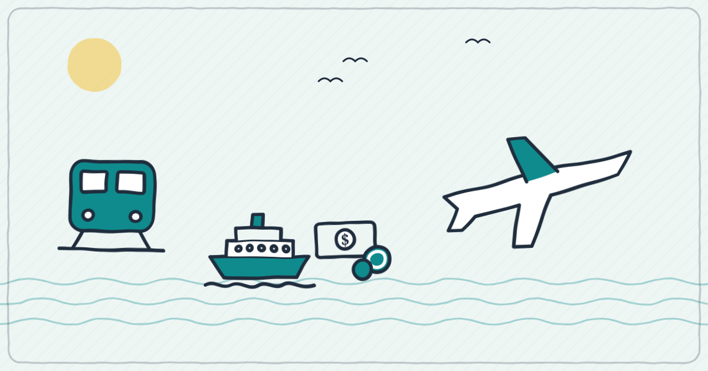

Edmonton to the Vancouver Cruise Port: Cheapest Options

For one or two people, a flight from YEG to YVR booked a few months out, then the Canada Line SkyTrain to Waterfront Station beside the cruise terminal, is the cheapest dependable route. Budget roughly C$150–300 return for the flight at recent prices plus about C$10–12 for the train. Fly in the day before and watch bag fees.
Fly, book early and take the train from the airport. That combination gets one or two people from Edmonton to a ship at Canada Place for less than any other dependable option, usually C$160–310 per person return at recent prices with the SkyTrain included. Driving only competes when four people share the car; the coach and VIA Rail are for people who would rather not fly.
What does each way from Edmonton to Canada Place cost?
Costs below are per person, return, for a couple travelling together on a 7-night Alaska sailing, at recent prices. Confirm for your dates.
| How you travel | Rough cost per person | Time, door to ship | Who it suits |
|---|---|---|---|
| Discount airline, SkyTrain | C$120–220 before bags | 4–5 hours | Light packers flying in the day before |
| WestJet or Air Canada, SkyTrain | C$160–310 | 4–5 hours | Most couples: the reliable middle |
| Drive, two people splitting | C$350–550 each incl. parking, hotels, fuel | Two long days each way | Only if you want the car in BC |
| Drive, four people splitting | C$175–275 each | Two long days each way | The one case where driving wins |
| Coach (Rider Express) | Often more than a discount flight | 16–18 hours | Travellers who will not fly |
| VIA Rail's Canadian | From a few hundred dollars for a seat, far more for a berth | A day and a half, often late | A holiday in itself, not a saving |
Every option also needs a hotel the night before sailing.
Why is flying from YEG the cheapest way to a Vancouver cruise?
The Edmonton to Vancouver run is about 90 minutes in the air with many departures a day: WestJet and Air Canada all year, with Flair and other low-cost carriers adding seats. Booked three to six months ahead, mainline return fares regularly fall between C$160 and C$300, and discount one-ways show up for well under C$100 before extras.
At the Vancouver end you skip the taxi. The Canada Line runs from inside the YVR terminal to Waterfront Station in about 26 minutes, and Canada Place is a few minutes on foot from the exit. That saves a couple C$30–40 each way compared with a cab.
How do I get to Edmonton airport without paying a week of parking?
YEG sits about 30 kilometres south of downtown, so the trip to the airport is a real cost on a budget. Three ways to handle it:
- ETS Route 747. The airport bus runs direct from Century Park Transit Centre to the terminal in about 24 minutes, seven days a week from roughly 4 am to half past midnight, every 30 to 60 minutes. The fare is a flat C$6 per person each way, payable with cash, Arc card or a tap of a credit card. For two people that is C$24 return against C$70 or more in taxis.
- Park and fly. Off-site lots near Leduc and the airport's long-term parking both offer weekly rates. For a 9- or 10-day trip, compare the total against a return rideshare before assuming parking is cheaper.
- A lift. A drop-off beats everything, and the 747 works for the return if nobody is free when you land.
Do discount airlines work for cruise travel?
Yes, on two conditions: fly in the day before, and travel light.
Low-cost carriers run thin schedules. If your flight cancels, the next one may be tomorrow, which is fatal on sailing day and merely annoying the day before. The second trap is the bag. A first checked bag on the cheapest fares runs roughly C$35–60 each way prepaid and more at the airport, so a couple checking two bags each way can spend as much on luggage as on seats.
Is driving from Edmonton to Vancouver worth it for a cruise?
Edmonton to Canada Place is about 1,160 kilometres by road: Highway 16 west through Jasper, south on Highway 5 to Kamloops, then the Coquihalla to the coast. Most people take two days each way. Count all of it before deciding:
- fuel both ways, with mountain grades and higher BC pump prices
- a hotel night in each direction for most drivers
- a Parks Canada pass if you stop anywhere inside Jasper National Park
- cruise-length parking at the Canada Place parkade, listed at C$25–30 a day with seasonal rates, so roughly C$200–240 for a 7-night sailing plus a pre-cruise night
- the height limit: the parkade takes vehicles up to about 1.98 m on one level and 2.05 m on another, so a tall SUV with a roof box may be sent elsewhere
For two people that bill nearly always exceeds two return flights plus the SkyTrain. For four adults in one vehicle, driving can win, and it leaves a car in Vancouver for a few days after the cruise. Pre-book the parkade for a guaranteed stall rather than arriving hopeful on a summer Saturday.
Coach and train from Edmonton: when do they make sense?
Rider Express runs Edmonton to Vancouver in about 16 to 18 hours, overnight, arriving downtown a short cab ride from Canada Place. Fares are not reliably cheaper than a discount flight once you include a bag, and a 17-hour seat is a hard start to a holiday. It suits people who do not fly, full stop.
VIA Rail's Canadian stops in Edmonton two or three times a week and takes about a day and a half to reach Pacific Central Station, often hours late because freight has priority. Book it as a scenic pre-cruise trip through Jasper and the Fraser Canyon with a spare night in Vancouver, not as a way to save money.
Where should I stay the night before sailing from Vancouver?
Anywhere on the Canada Line keeps the morning simple. Downtown hotels near Canada Place are the priciest; Richmond hotels around Bridgeport and Aberdeen stations are often C$60–100 a night cheaper in Alaska season and still 20 minutes from the terminal by train. Arrive at Canada Place in the late morning of sailing day, after the first rush.
One document check belongs on the night before: an Alaska round trip from Vancouver enters the United States, so pack what the passport rules for an Alaska cruise from Vancouver say you need, in the carry-on rather than the checked bag.
Fly-cruise packages against doing it yourself
Cruise line air from Edmonton prices the flight into the booking and comes with one real benefit: if the airline strands you, the line is responsible for getting you to the ship. In peak Alaska weeks that protection, and occasionally a lower fare, makes package air worth pricing. Outside those weeks, a self-booked flight the day before, a Richmond hotel and the SkyTrain usually cost less.
The rest of the trip's budget is laid out in what an Alaska cruise from Vancouver really costs, and the best side and deck for Alaska scenery helps with the cabin.
Want this checked for your own sailing? A licensed cruise consultant can price it up and answer questions for free, with no obligation.
Ask a cruise expert →The route most Edmonton couples end up taking
An afternoon flight the day before, the Canada Line to a Richmond or downtown hotel, then the train to Waterfront with the bags. Total transport for two, at recent prices, is usually C$350–650 including the airport bus at home. Nothing else is cheaper without giving up the day-before buffer that protects the whole cruise.
Still wondering?
How do I get from Vancouver airport to the cruise ship terminal?
Take the Canada Line SkyTrain from YVR Airport station to Waterfront Station, about 26 minutes with no changes. Canada Place is a short, flat walk from the station exit. Expect to pay about C$10–12 including the airport AddFare, against C$40 or more for a taxi.
Is it cheaper to drive from Edmonton to a Vancouver cruise?
Not for two people once you count fuel through the mountains, a hotel each way and cruise-length parking at C$25–30 a day. With four adults sharing one vehicle and splitting those costs, driving can come close to or beat four return airfares.
Can I fly from Edmonton the morning my cruise leaves?
You can, but it is the costliest mistake on this route. A morning delay or cancellation leaves no time to reach Canada Place before the ship closes boarding. Fly the afternoon or evening before and sleep in Vancouver.